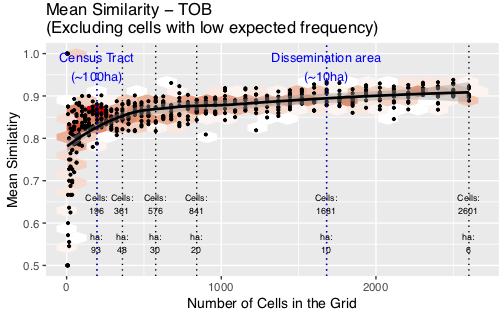

GIS Research UK 2019
Identifying the appropriate spatial resolution for the analysis of crime patterns
Nick Malleson*, Wouter Steenbeek and Martin Andresen
*School of Geography, University of Leeds, UK
nickmalleson.co.uk
These slides: www.nickmalleson.co.uk/presentations.html
'Appropriate' Spatial Scale

What is the appropriate spatial scale for the analysis of spatial patterns?
Addresses, streets, neighbourhoods, regions, etc..
Could be a theoretical choice
E.g. we know individual houses are important
Or determined empirically
E.g. we only have data at the neighbourhood level
'Appropriate' Spatial Scale
But in some cases, there might be a need to find an 'appropriate' scale
In general: smaller is better (homogeneous events and population)
But: how small is too small
High-resolution data are hard / expensive to obtain (might be personally disclosive / commercially sensitive)
Small number problems / signal v.s. noise
Definition of the most appropriate scale: that which is as large as possible without causing the underlying spatial units to become heterogeneous with respect to the phenomena under study.
Method
Combines and adapts two existing methods:
Multiple-resolution goodness of fit procedure (Costanza, 1989) and a test for spatial (dis)similarity (Andresen’s S: Andresen, 2009; Wheeler et al.,2018).
- Choose two similar crime datasets
- Place a regular grid over the two data sets
- Count the number of points in each cell from each data set
- Remove cells with insufficiently low expected frequency
- Calculate similarity using Andresen's Global S index
- Repeat (2) using a smaller grid N times (until similarity is fairly constant)
- Graph the similarity at different resolutions
Either split one data set into two, or choose two different years. Need to be structurally similar; differences due to randomness
Method
Calculating Similarity (Andresen's S)
For each grid cell, calculate the proportion of events from each data set (p1, p2)
Use Fisher's exact test to determine whether the proportions are similar
dissimilar -> 0, similar -> 1
Provides local (per cell) estimates of similarity ( SL )
Global similarity ( SG ) is the mean of all cells
Removing cells with low count
What about cells with too few events? Cannot just mark as 'similar'
Calculate expected number of events
E = row marginal * column marginal / grand total
Remove cells with E < 5 (by convention)
Method
All analysis uses the excellent Spatial Point Pattern Test ( sppt ) R library
Thanks Wouter!!
All code and are data available
Similarity at different resolutions
Quiz
Similarity at different resolutions
What I expected
Similarity at different resolutions
WTF?
Similarity at different resolutions
Explanation
Case Study - Vancouver
Publicly-available crime data with good spatial accuracy
Chosen crimes: BNER, BNEC, TFV, TOB

Simulated Results
Crime data results
Well, what is the most appropriate resolution?
Discussion: Residential Burglary (BNER)
Peak in similarity with cells of ~20 hectares in size
Twice as large as a dissemination area / OA (smallest census unit)
20ha is the most appropriate scale?
Smaller is usually better, but <20ha noise might hide the signal
Note: burglary patterns were somewhat dissimilar
Discussion: Theft from Vehicle (TFV)
Similarity increases to ~20ha, then plateaus
No disadvantage to using smaller units
Although fewer cells have explanatory power with small cells
Discussion: Commercial Burglary (BNEC) and Theft of Bike (TOB)
Similarity peaks, then continues to rise
Even with 6ha cells there is still a discernible signal
Very tightly clustered crime pattern
Has explanatory power even at very small cells (in clustered areas)
Conclusion
Is smaller really better?
Yes! Environmental criminologists can relax...
High-quality, disaggregate data are always preferable
Rather, we propose a framework to explore the scale at which the broader spatial pattern might be overcome by noise
In cases where space is important for the phenomena
Caveat: Meaningful spatial units
Grid cells are not meaningful
Better to use a geography that links to the underlying phenomena
E.g. illuminating work on street segments
Future work could explore this
For more information about what we're doing at Leeds
Data Assimilation for Agent-Based Models (dust)
Main aim: create new methods for dynamically assimilating data into agent-based models.
Uncertainty in agent-based models for smart city forecasts
Developing methods that can be used to better understand uncertainty in individual-level models of cities
Bringing the Social City to the Smart City
https://alisonheppenstall.co.uk/research/bringing-the-social-city-to-the-smart-city/

References
Please see the GISRUK abstract at: